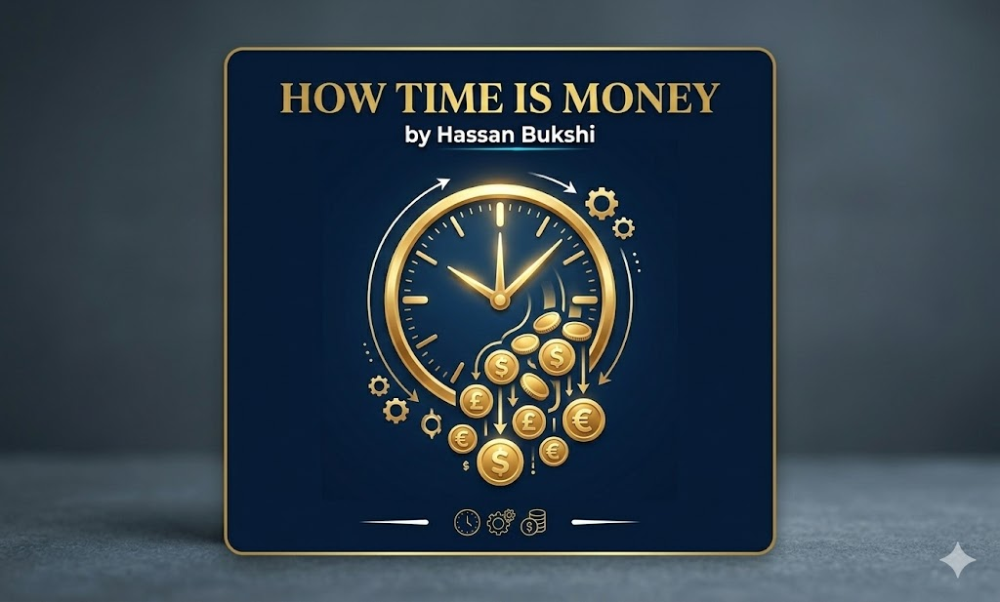

Knowledge • Articles • Learning

The phrase “Time is money” is one of the most commonly used expressions in the modern world. It means that time is a valuable resource and should not be wasted. Just like money, time can be invested, saved, or wasted. The idea behind this phrase became popular in the 18th century when the famous American thinker Benjamin Franklin used it to explain the importance of using time wisely.
In today's fast-paced world, where people constantly work, study, and compete for success, the value of time has become even more significant. Understanding how time works and how it influences productivity, success, and personal growth is essential for individuals and societies.
The expression “Time is money” highlights the economic value of time. In simple terms, the time a person spends working can be converted into financial earnings. For example, if someone earns money per hour, every minute they spend working contributes to their income.
However, the meaning of this phrase is not limited to financial matters. Time is also valuable for learning, building relationships, improving health, and developing skills. When people manage their time effectively, they become more productive and successful in many areas of life.
Time management refers to the process of planning and organizing how much time to spend on different activities. Effective time management helps individuals complete tasks efficiently and avoid wasting time.
Students who plan study schedules perform better in exams, and professionals who prioritize tasks accomplish more work in less time.
In economics, time is considered a valuable resource because it affects productivity and economic growth. Businesses rely on time efficiency to maximize profits, while workers are often paid according to their working hours.
Students who dedicate enough time to studying and practicing skills achieve better results. Learning requires patience and continuous effort.
Time can also be used for self-improvement through reading, exercising, and learning new skills.
The phrase “Time is money” highlights the importance of valuing time as a limited and precious resource. By managing time wisely, people can achieve their goals, improve productivity, and live more meaningful lives.
← Back to Home